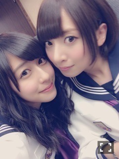

| 2016/10 20 Thu | 斎藤ちはる 密かな憧れ。 |
ちはるーむへようこそ！
乃木坂46のオールナイトニッポンで、ななみんが
卒業を発表しました(> <)
とても寂しい。。
悲しい。。
外見や雰囲気も好きだけど
ななみんの考え方が好きです。
自分を持っていて大人なところ。
私にとってななみんは
憧れの存在であり密かに推しメンです。
私の推しメンは
ななみん、まいまい、寧々なので
これで3人とも卒業してしまうのが
寂しいです。
3人とも静かにメンバーのことを見守って
支えてくれて、優しいから好きなんだ(*´ `*)
3人とも卒業してしまうけど
これからも変わらず推しメンは3人です。
「芸能界を引退する」と公言して
卒業するのは乃木坂で初めてだと思います。
その決めたら曲げない心を持ってるのも
ななみんらしくてかっこいいな〜
卒業しても、引退しても、
ななみんには幸せになってほしい！
ななみんは素敵な人なので
周りには素敵な人が集まると思います。
ななみんラストの16th新曲
「サヨナラの意味」
いいシングルにできるように
メンバー全員で頑張っていきます！！

最近の写真が無い...
卒業までに沢山撮れたらいいな〜！
-------------------------♡
#chihashot
先週同様、父のサーフィンに着いて行った時に
撮った海の写真。
また別の日に着いて行っちゃいました(..)♪
この日は晴れていたので
海の青、空の青、波の白を
綺麗に撮る事ができました！
波の躍動感を撮れたのが良かった。
撮りたかったのです。
カメラがある毎日は
カメラの無かった毎日に比べて
とても充実しています！
撮りたい写真を撮れるようになったので。
これからも沢山の風景や、
素敵な写真を撮りたいなd(￣ ￣)
-------------------------♡
♬ ChihaMusic
「ともに」WANIMAさん
別れの歌なので今日にぴったりかと思い
この曲を選びました。
勢いがあって一見明るいけど
歌詞には別れや寂しさを感じて
それが余計に今、響きます。
"どれだけ過去が辛くて暗くても
昨日よりも不安な明日が増えても
悩んだり泣いたりする今日も
進め君らしく 心躍る その先には幸を..."
本当素敵な歌詞だなあ。
皆さんも聴いたら、歌詞を見たら
しみじみと感じると思います。
ななみんとはいつかライブやフェスに
一緒に行きたいな〜(> <)
私の密かな願いです。
おやすみ。
斎藤ちはる